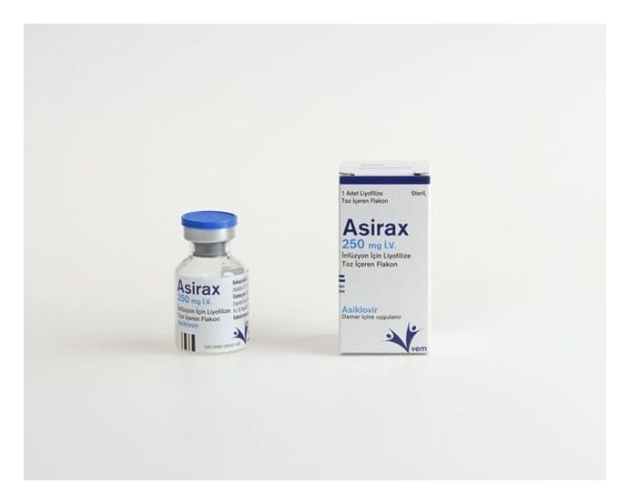

Asirax 250 mg I.V. İnfüzyon İçin Liyofilize Toz İçeren Flakon, 1 Adet

Ne için kullanılır
KT · Bölüm 1ASİRAX etkin madde olarak asiklovir içerir. Asiklovir, “antiviral” adı verilen bir ilaç grubunun üyesidir. Her kutu içerisinde beyaz renkli liyofilize toz bulunan 1 adet flakon içeren ambalajlar halindedir. ASİRAX, Herpes simpleks virüs (HSV), Varicella zoster virüs (VZV) adlı virüslere karşı etkili antiviral bir ilaçtır. ASİRAX, suçiçeği, zona, uçuk, genital herpes ve Herpes simpleks’in sebep olduğu diğer iltihapların tedavisinde endikedir. Uçuk, genital herpes ve diğer herpes iltihaplarının yeniden
görülmesini engeller. Bağışıklık sistemi yetersiz hastalarda Herpes simpleks’in neden olduğu iltihabın önlenmesinde kullanılır.